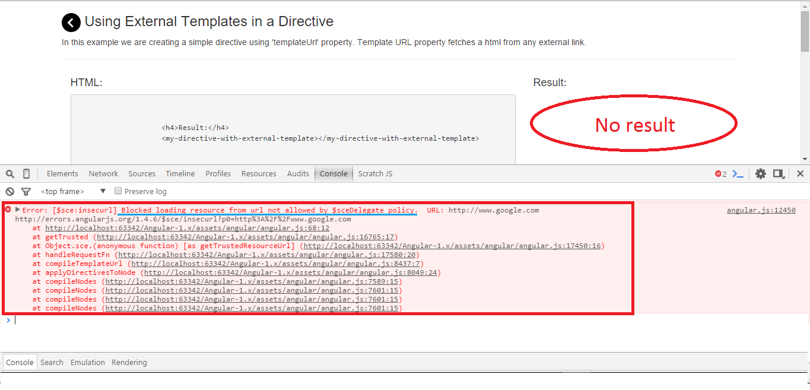

HTML:
<h4>Result:</h4>
<my-directive-with-external-template></my-directive-with-external-template>
JavaScript:
/////////////
//Angular App
////////////
var myApp = angular.module("myApp", []);
/////////////
//Angular Controller
////////////
myApp.controller('Controller1',[Controller1]);
function Controller1(){
}
/////////////
//Angular Directive
////////////
myApp.directive('myDirectiveWithExternalTemplate',[MyDirectiveWithExternalTemplate]);
function MyDirectiveWithExternalTemplate(){
return {
templateUrl:'simple-directive-template.html'
}
}
Checkout the use of templateUrl property we are returning from directive
What will happen if I try to use
return {
templateUrl:'http://www.google.com'
}
instead of poitning to an internal html page I am now pointing to an external website
which is, obviously, outside of my own domain.
If you try to do this ^ , you will see somethign similar to this:

We will talk about "Strict Contextual Escaping" and how to solve this problem
in advance directive topics